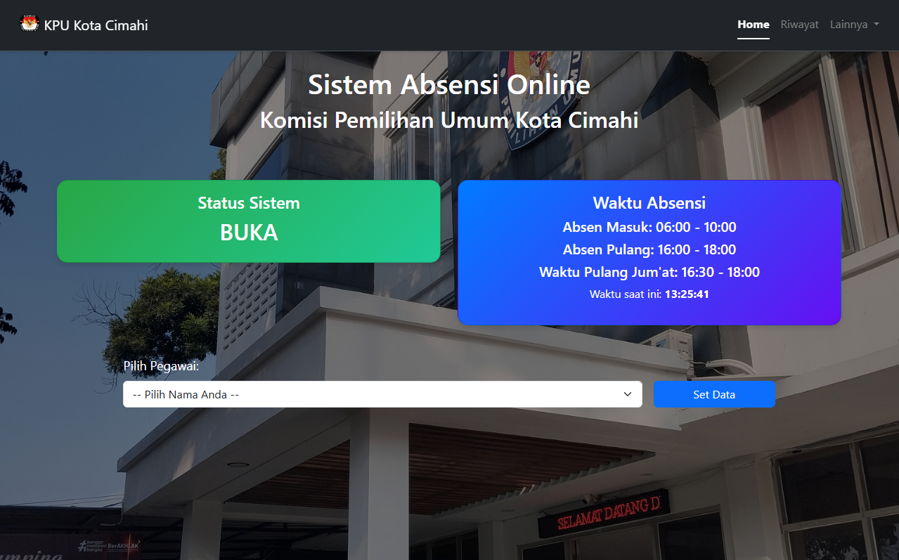

Junior Web Developer (Frontend & PHP Developer)
Saya merupakan lulusan baru yang memiliki minat dalam pengembangan web, khususnya pada frontend development dan backend dasar menggunakan PHP. Saya telah memiliki pengalaman dalam mengembangkan sistem absensi berbasis web saat Praktik Kerja Lapangan (PKL) di KPU Cimahi, yang membantu saya memahami alur kerja aplikasi secara nyata. Saya mampu membangun website menggunakan HTML, CSS, JavaScript, dan PHP dengan fitur seperti login, session, serta CRUD data. Saya juga memiliki ketertarikan pada pengembangan UI/UX untuk menghasilkan tampilan yang lebih rapi dan mudah digunakan. Saya terbiasa bekerja secara mandiri maupun dalam tim, serta memiliki semangat belajar tinggi untuk terus berkembang di bidang teknologi.
SMK PGRI 1 CIMAHI
SMP PGRI 4 CIMAHI
SD HANJUANG SAMIJAYA

dwiapriynt@gmail.com
+62 895 0100 0542
linkedin.com/